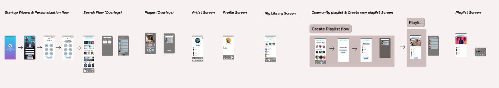

In today’s digital age, music lovers often struggle to discover new music, share their favorite
tracks, and collaborate on playlists with friends in a seamless and interactive way. Existing music
platforms lack real-time collaboration and personalized community-driven features, making music
discovery and sharing a fragmented experience. There is a need for a dynamic platform that fosters a
vibrant music community by enabling users to create, share, and collaborate on playlists effortlessly
while receiving personalized recommendations. MusicSphere aims to bridge this gap by providing an
engaging, interactive music-sharing experience.
The goal of MusicSphere is to create a dynamic and interactive platform that enhances music discovery,
sharing, and collaboration
To create an innovative and user-centric platform like MusicSphere, extensive research has been
conducted to understand user behavior, industry trends, and technological capabilities.
User Behavior & Preferences: Users like to seek seamless collaboration, high-quality curated
playlists, and real-time interactions to enhance their music experience.
Market Analysis: Existing music platforms often lack robust collaborative playlist features and
real-time playback syncing.
Competitor Study: Platforms like Spotify and Apple Music provide music discovery features but
lack strong collaborative and community-driven playlist creation.
Discovery : Dorji hears about MusicSphere from fellow DJs and decides to
explore it.
Onboarding : He signs up, personalizes his preferences, and starts exploring playlists.
Engagement : He collaborates with other DJs, syncs playback with friends, and shares his
playlists.
Satisfaction : Dorji finds high-quality playlists and receives engagement on his music.
Retention : He continues using MusicSphere for every event, growing his network and fanbase.
In the ideation phase of designing MusicSphere, I used the Crazy Eight method to brainstorm solutions
for various challenges faced by music lovers and artists. The key problems addressed were the lack of
real-time shared listening experiences and limited collaborative playlist creation options. And i have
created paper wireframes
Conducted Usability testing with protype to gather user feedback
View
Details
Identified key improvements such as clearer login/signup distinction, enhanced search visibility,
better lyrics/queue toggling, and more intuitive friend-sharing labels — leading to a smoother,
user-friendly experience.
After taking all the user feedback final prototype was finailized
